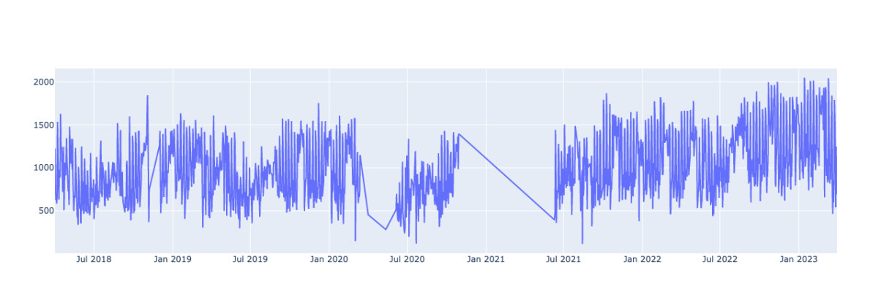
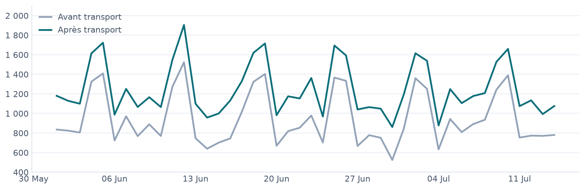
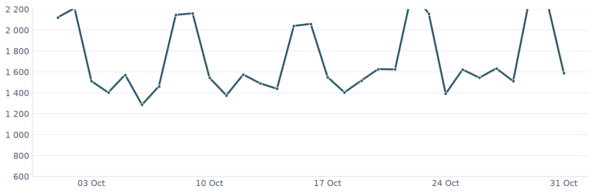
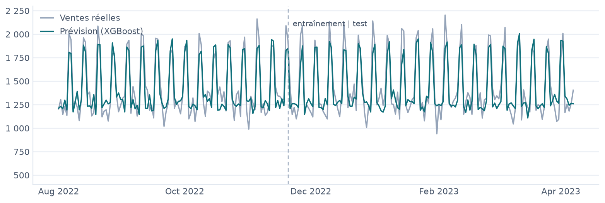

Prévoir le chiffre d’affaires d’un restaurant, jour par jour
Un modèle XGBoost entraîné sur le journal de caisse pour transformer un prévisionnel statique en outil de pilotage opérationnel. Mémoire DSCG, 2023.
Le problème
Le prévisionnel comptable « classique » repose sur des moyennes, une hypothèse de marge constante et une granularité mensuelle, voire annuelle. Il suppose que demain ressemblera à hier : il ne capte ni la saisonnalité fine d’une activité, ni les jours de la semaine, et reste exposé aux erreurs de jugement humain. Daniel Kahneman en distingue deux : le biais (se tromper toujours dans le même sens) et le bruit (deux personnes, mêmes chiffres, prévisions différentes).
La question posée par le mémoire : peut-on prévoir le chiffre d’affaires journalier d’un restaurant à partir de ses seules données comptables, avec une précision suffisante pour en faire un outil de pilotage — achats, stocks, plannings ? L’enjeu est double, économique et environnemental : mieux anticiper, c’est acheter au plus juste et moins jeter.
En clair — un prévisionnel comptable traditionnel dit « le mois prochain, environ X ». Ici, on cherche à dire « samedi prochain, environ Y » — assez précis pour qu’un restaurateur sache combien commander et combien de personnes faire travailler.
Les données
Point de départ : la caisse informatisée du client. Les encaissements sont détaillés par jour et ventilés par taux de TVA, puis remontés via une API. C’est ce journal de caisse, du 01/04/2018 au 30/03/2023 et entièrement anonymisé, qui a servi de base d’entraînement.
Choix assumé : prédire le chiffre d’affaires à partir de lui-même, sans donnée externe. À cette granularité, aucune source météo ou sectorielle n’a été jugée assez pertinente pour justifier sa complexité. Le nettoyage a consisté à retirer les jours de fermeture — repos hebdomadaire et fermetures administratives Covid — repérés en traçant la série.

En clair — la matière première n’est pas un fichier de data science tout prêt : c’est la caisse réelle d’un vrai restaurant. Une bonne partie du travail est de la rendre exploitable sans trahir les chiffres.
L’approche
Journal de caisse — CA journalier par TVA (2018 → 2023)
└── Python (pandas)
├── nettoyage — retrait des jours fermés (repos, Covid)
├── détection de rupture — lib « ruptures », point au 23/07
├── Optimal Transport — réalignement des deux régimes de CA
├── feature engineering — 2 → 16 variables calendaires
├── target encoding — sous cross-validation (anti-fuite)
└── XGBoost + Optuna — split temporel 90 / 10Détection de rupture et Optimal Transport
Technique
La visualisation révèle deux régimes de chiffre d’affaires séparés par un point de rupture, détecté automatiquement avec la bibliothèque ruptures (au 23 juillet). Entraîner un modèle sur une série qui « change de niveau » en cours de route le fausse. J’ai donc réaligné la distribution antérieure via l’Optimal Transport — un procédé mathématique qui mesure le « coût » pour transformer une distribution en une autre, et déplace ici les valeurs anciennes vers le niveau récent. Sans ce réalignement, le modèle sous-évaluait systématiquement les données de test.

En clair — à un moment, le restaurant a durablement changé de niveau d’activité (nouvelle carte, notoriété, travaux…). Apprendre sur « l’ancien » et « le nouveau » mélangés brouille tout. L’Optimal Transport remet l’ancienne période à l’échelle de la nouvelle, pour que le modèle apprenne sur une histoire cohérente.
Feature engineering : de 2 à 16 colonnes
Technique
Le jeu de départ ne contient que deux colonnes : date et chiffre d’affaires. J’en ai dérivé quatorze variables calendaires : jour de la semaine, week-end (oui/non), jour de l’année, numéro de semaine, position en début ou fin de mois, etc. C’est le cœur de la performance : ce ne sont pas les chiffres bruts qui font la prévision, mais ces repères temporels que le modèle apprend à associer aux hausses et aux baisses.

En clair — une date seule (« 2023-07-15 ») ne dit rien à un modèle. En la décomposant en « samedi », « mi-juillet », « milieu de mois », on lui donne les indices qu’un gérant utilise intuitivement pour savoir si la journée sera chargée.
Encodage cible sans fuite de données
Technique
Les variables catégorielles (le mois, par exemple) sont remplacées par la moyenne du chiffre d’affaires associé — un target encoding. Le piège classique est la fuite de données : si l’on calcule cette moyenne sur l’ensemble des données, le modèle « voit » indirectement la réponse qu’il est censé deviner. Pour l’éviter, l’encodage est réalisé sous validation croisée : chaque portion de données est encodée à partir des autres, jamais d’elle-même.
En clair — on veut noter le modèle sur des jours qu’il n’a jamais vus. Si on le laisse tricher en regardant les réponses pendant qu’il révise, sa note ne veut plus rien dire. La validation croisée l’empêche de tricher.
Le modèle : Gradient Boosting, puis XGBoost
Technique
Le Gradient Boosting construit une série de petits modèles (des arbres de décision) où chacun corrige l’erreur du précédent. On part de la moyenne des ventes ; on calcule l’écart avec le réel (le résidu) ; un arbre apprend à prédire cet écart à partir des variables calendaires ; on ajuste la prévision d’une fraction de cet écart (le taux d’apprentissage), et on recommence.
Exemple : prévision de départ 1 000 €, réel 1 200 € → résidu de 200 €. Avec un taux d’apprentissage de 0,2, la nouvelle prévision devient 1 000 + (0,2 × 200) = 1 040 €. On s’approche, arbre après arbre.
Parmi les implémentations, le choix est raisonné : Gradient Boosting Machine (trop simple), LightGBM (taillé pour les très gros volumes, inadapté à un jeu de données restreint), puis XGBoost — retenu pour sa régularisation intégrée contre le surajustement et sa parallélisation. Les hyperparamètres ont été optimisés automatiquement avec Optuna :
| Hyperparamètre | Rôle |
|---|---|
learning_rate |
Part de chaque arbre dans la prévision finale — plus faible = plus fin, mais plus d’arbres |
n_estimators |
Nombre d’arbres — trop élevé = risque de surapprentissage |
max_depth |
Profondeur des arbres — profond = capte le détail, mais surapprend |
subsample |
Part des données utilisée par arbre — bride la spécialisation excessive |
Le découpage entraînement / test est temporel (90 / 10), jamais aléatoire : dans une série chronologique, mélanger le passé et le futur reviendrait à s’entraîner sur des jours postérieurs à ceux qu’on prétend prédire.
En clair — le modèle avance par petites corrections successives, comme un tireur qui ajuste sa visée à chaque essai. Optuna se charge de régler les molettes du modèle à notre place, et on teste toujours sur la période la plus récente — celle qu’il n’a pas vue.
Le résultat
| Métrique | Entraînement | Test | Global |
|---|---|---|---|
| MAE | 90 € | 219 € | 103 € |
| RMSE | 118 € | 290 € | 144 € |
Sur les données de test — jamais montrées au modèle — le chiffre d’affaires journalier est prédit avec une erreur moyenne d’environ 219 € (MAE). La RMSE, qui pénalise davantage les gros écarts, monte à 290 € : signe que la plupart des jours sont bien prédits, mais que quelques-uns le sont franchement mal. Et comme les erreurs sont plus faibles à l’entraînement qu’au test, le modèle est partiellement surajusté — je le diagnostique sans le masquer.

En clair — en moyenne, le modèle se trompe de ~219 € par jour sur des journées qu’il découvre. « Surajusté » veut dire qu’il a un peu trop appris par cœur son historique, au lieu de dégager la tendance générale.
L’analyse d’importance des variables confirme la lecture métier : la variable week-end arrive en tête, suivie du jour de la semaine, puis du jour de l’année (saisonnalité). Le modèle a bien capté ce qu’un gérant sait d’instinct — les pics tombent le week-end. Un angle mort révélateur : faute de variable « jours fériés », le modèle surestime nettement le 24 décembre.
Limites
- Surajustement partiel — pistes de correction : plus de données d’entraînement, variables externes, ou réingénierie des résidus.
- Pas de variable « jours fériés » — d’où la surestimation du 24 décembre.
- Dépendance à une fréquence de données élevée — le même modèle sur une TPE du bâtiment, aux chantiers irréguliers, serait bien moins précis.
- Les chocs imprévisibles le restent — aucune de ces méthodes n’aurait anticipé le Covid.
- Un seuil de livraison reste à fixer — à partir de quelle MAE / RMSE un prévisionnel est-il assez fiable pour être présenté à un client ? La question se tranche avant la mission, pas après.
Pour aller plus loin
Deux prolongements naturels : un passage en streaming — un flux continu de la caisse vers le modèle, réentraîné à fréquence maîtrisée — et une restitution Power BI : prévisions côté client, tableaux de bord de monitoring des métriques côté cabinet.